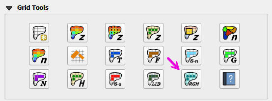
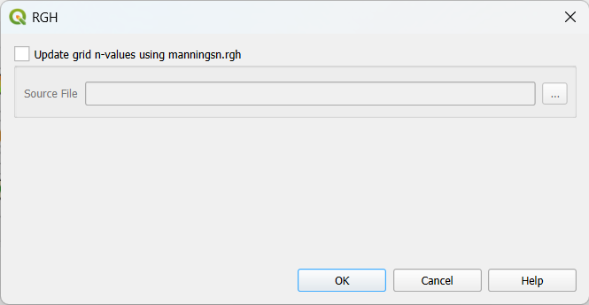
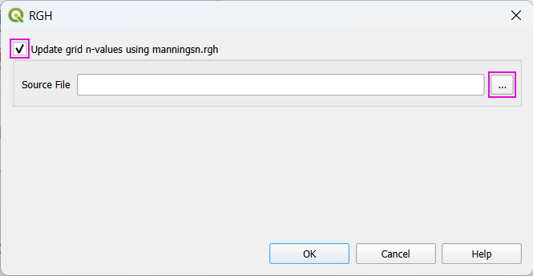
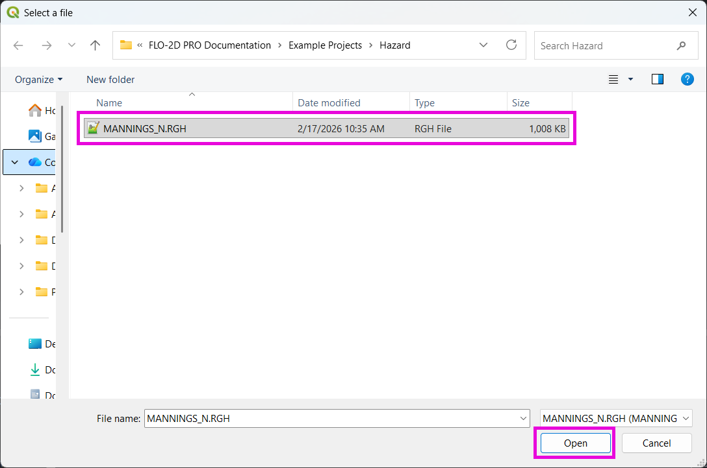
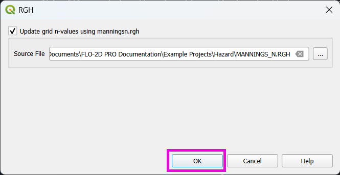
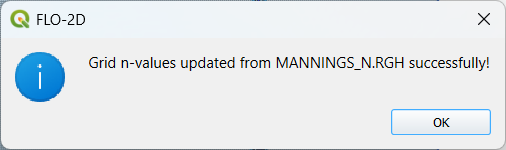

17. Model-Revised Grid Inputs (.RGH Files)
Warning
🚧 This page is currently under development 🚧

Overview
.RGH files in FLO-2D are runtime / revised data output files the model can produce that contain updated versions of some input datasets after a run (for example: revised elevations, revised Manning’s n values, or other cell-by-cell adjustments that occurred during simulation).
They are primarily used for:
recording model-computed changes to input parameters (so you can inspect or reuse those adjustments), and
optionally replacing the original .DAT file for a subsequent run (by renaming a .RGH to the corresponding .DAT).
Two common triggers that produce or update .RGH contents:
the FROUDL (limiting Froude) handling that increases n-values at runtime, and
the IBACKUP option (particularly IBACKUP = 2) that writes elevation/outflow node changes back to an .RGH file.
List of .RGH Files:
FPLAIN.RGH
CHAN.RGH
STREET.RGH
MULT.RGH
MANNINGS_N.RGH
FPLAIN_SDELEV.RGH
TOPO_SDELEV.RGH
STEEPROUGH.RGH
CHAN.RGH
CHAN.RGH is a duplicate file of the CHAN.DAT file with the updated Manning’s n-value changes that were reported in the ROUGH.OUT file. The maximum and final Manning’s n-value changes are listed in the ROUGH.OUT file. To accept the changes to Manning’s n-values, CHAN. RGH can be renamed to replace CHAN.DAT for the next FLO-2D flood simulation. This automates the spatial adjustment of n-values for channel elements that exceed the limiting Froude number.
FPLAIN.RGH
This file contains the final Manning’s n-value changes for the floodplain grid elements. The maximum and final Manning’s n-values are reported in the ROUGH.OUT. If the changes are acceptable, FPLAIN.RGH can be renamed to FPLAIN.DAT for the next FLO-2D flood simulation. This automates the spatial adjustment of n-values for floodplain elements that exceed the limiting Froude number.
FPLAIN_SDELEV.RGH
This file contains the elevation adjustments that were automatically correct ed when the FLO-2D engine compared the floodplain grid elements to the storm drain rim and type 4 invert elevations. To fully accept the changes reported to fprimelev.new, replace FPLAIN.DAT with this file. It is also necessarry to replace the TOPO.DAT with TOPO_SDELEV.RGH.
MANNINGS_N.RGH
MANNINGS_N.RGH is a duplicate file of the MANNINGS_N.DAT file with the updated Manning’s n-value changes that were reported in the ROUGH.OUT file. The maximum and final Manning’s n-value changes are listed in the ROUGH.OUT
MULT.RGH
MULT.RGH is a duplicate file of the MULT.DAT file with the updated Manning’s n-value changes that were reported in the ROUGH.OUT file. The maximum and final Manning’s n-value changes are listed in the ROUGH.OUT.
STREET.RGH
This file lists the final changes to Manning’s n-values for the street grid elements. The maximum and final Manning’s n-values are reported in the ROUGH.OUT file. If the n-value changes are acceptable, STREET.RGH can be renamed to STREET.DAT for the next FLO-2D flood simulation. This automates the spatial adjustment of n-values for street elements that exceeded the limiting Froude number
TOPO_SDELEV.RGH
This file contains the elevation adjustments that were automatically corrected when the FLO-2D engine compared the floodplain grid elements to the storm drain inlet rim and type 4 invert elevations. To fully accept the changes reported to fprimelev.new, replace TOPO.DAT with this file. It is also necessary to replace the FPLAIN.DAT with FPLSIN_SDELEV. RGH.
MANNINGS_N.RGH

This tool updates the grid table n-values. To use it, the “Update grid n-values using manningsn.rgh” checkbox must be checked as shown in the figure below.

After that, one can now select the source file (MANNINGS_N.RGH) and click OK and apply the corrections.


